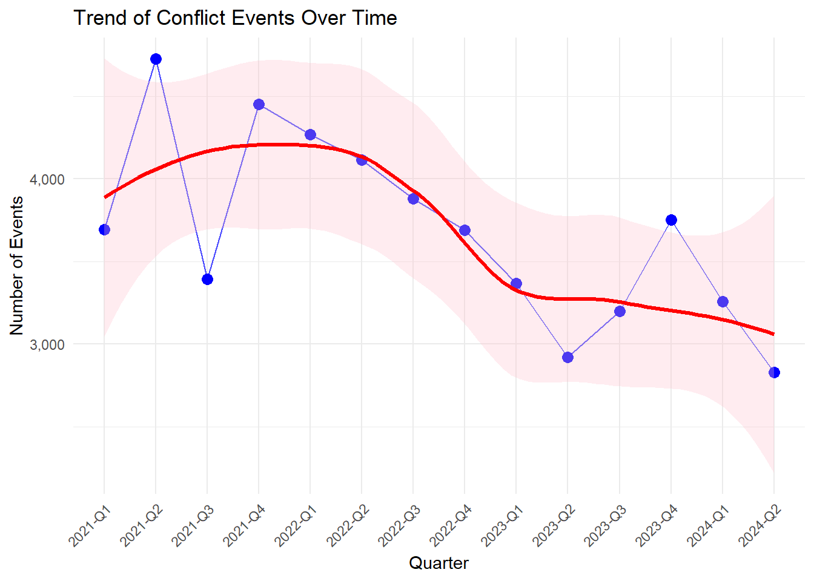

pacman::p_load(sf, tidyverse, tmap, maptools, raster, spatstat, sp, sparr, OpenStreetMap, stars, RColorBrewer, knitr, igraph, viridis, patchwork, gridExtra, ggrepel, tmaptools, mapview)Take Home Exercise 1: Armed Conflict in Myanmar
This exercise aims to analyze the spatial and temporal patterns of conflict events in Myanmar from January 2021 to June 2024, using conflict data from the Armed Conflict Location & Event Data Project (ACLED). By employing geospatial analysis techniques, we seek to provide insights into the evolving nature of the conflict, its geographical distribution, and potential implications for conflict resolution and humanitarian efforts.
1.0 Introduction
Myanmar, formerly known as Burma, has been embroiled in a complex and multifaceted conflict since its independence in 1948. The current phase of the conflict, which this study focuses on, began with the military coup on February 1, 2021. This coup abruptly ended a decade of quasi-democratic rule and plunged the country into a new era of political instability and armed conflict.
1.1 Timeline of Conflict
The conflict in Myanmar is part of a long history of political instability and ethnic tensions. To understand the current situation, it’s crucial to consider the historical precedence:
- 1948: Myanmar gains independence from British rule.
- 1962: General Ne Win leads a military coup, establishing a one-party state.
- 1988: Nationwide pro-democracy protests (8888 Uprising) are violently suppressed by the military.
- 1990: The National League for Democracy (NLD) wins a landslide victory in elections, but the military refuses to hand over power.
- 2011: The military junta is officially dissolved, leading to a period of quasi-democratic rule.
- 2015: The NLD wins a majority in the first openly contested election in 25 years.
Recent Events:
February 1, 2021: The Myanmar Armed Forces (Tatmadaw/junta) seizes power in a coup d’état, detaining State Counsellor Aung San Suu Kyi and other senior members of the ruling NLD party.
February 2021 onwards: Nationwide protests erupt against military rule, known as the Civil Disobedience Movement (CDM).
April 2021: The National Unity Government (NUG), a parallel government formed by ousted lawmakers and ethnic leaders, declares a “people’s defensive war” against the military junta.
2021-2024: Ongoing armed conflict between the military, ethnic armed organizations (EAOs), and newly formed People’s Defence Forces (PDFs).
1.2 Key Actors
The conflict in Myanmar involves multiple actors with diverse interests:
- Tatmadaw (Myanmar Armed Forces: The main actor representing the military junta.
- National Unity Government (NUG): The parallel government formed by ousted lawmakers and ethnic leaders.
- Ethnic Armed Organizations (EAOs): The EAOs are made of disjointed groups representing ethnic minorities, some of which have been in conflict with the central government for decades.
- People’s Defence Forces (PDFs): A coalition of civilian resistance groups formed in response to the military coup.
1.3 Regional Dynamics
Myanmar’s conflict landscape is complex and multifaceted, with regional dynamics playing a crucial role:
- Sagaing Region: Traditional hotspot of resistance against the military junta, with intense fighting between the military and local PDFs.
- Rakhine State: Historically a site of conflict involving the Arakan Army (EAO) and issues related to the Rohingya minority.
- Shan State: Complex dynamics involving multiple EAOs and ongoing conflicts over territory and resources.
- Yangon Region: The country’s largest city and former capital, a focal point for urban resistance and protests.
2.0 Data Collection
2.1 Armed Conflict Data
For this assignment, armed conflict data of Myanmar between January 2021 - June 2024 from Armed Conflict Location & Event Data (ACLED), an independent, impartial, international non-profit organization collecting data on violent conflict and protest in all countries and territories in the world, was used.
2.2 GIS Data
Relevant Geospatial data was gathered from Myanmar Information Management Unit (MIMU)
3.0 Data Wrangling
3.1 Loading Packages
3.2 Loading Data
Before proceeding with our analysis, we need to import two sets of data:
- Armed Conflict Data: This dataset from ACLED contains information on the location, date, and type of conflict events that occurred in Myanmar from January 1, 2024 until June 30, 2024.
- Administrative Boundary Data: These shapefiles from MIMU contain the administrative boundaries of Myanmar at the state and region level.
acled_sf <- read_csv("data/aspatial/ACLED_Myanmar.csv") %>%
st_as_sf(coords = c("longitude", "latitude"), crs = 4326) %>%
mutate(event_date = dmy(event_date)) %>%
mutate(
quarter = paste0(year, "-Q", quarter(event_date, with_year = FALSE)),
quarter = factor(quarter)
) %>%
relocate(quarter, .after = year)Rows: 51553 Columns: 32
── Column specification ────────────────────────────────────────────────────────
Delimiter: ","
chr (20): event_id_cnty, event_date, disorder_type, event_type, sub_event_ty...
dbl (12): year, time_precision, inter1, inter2, interaction, iso, latitude, ...
ℹ Use `spec()` to retrieve the full column specification for this data.
ℹ Specify the column types or set `show_col_types = FALSE` to quiet this message.Exploring the Armed Conflict Data
head(acled_sf, n=10)Simple feature collection with 10 features and 31 fields
Geometry type: POINT
Dimension: XY
Bounding box: xmin: 94.9021 ymin: 21.9251 xmax: 96.6819 ymax: 23.1269
Geodetic CRS: WGS 84
# A tibble: 10 × 32
event_id_cnty event_date year quarter time_precision disorder_type
<chr> <date> <dbl> <fct> <dbl> <chr>
1 MMR64313 2024-06-30 2024 2024-Q2 1 Political violence
2 MMR64320 2024-06-30 2024 2024-Q2 1 Political violence
3 MMR64321 2024-06-30 2024 2024-Q2 1 Political violence
4 MMR64322 2024-06-30 2024 2024-Q2 1 Strategic developments
5 MMR64323 2024-06-30 2024 2024-Q2 1 Political violence
6 MMR64324 2024-06-30 2024 2024-Q2 1 Strategic developments
7 MMR64325 2024-06-30 2024 2024-Q2 1 Political violence
8 MMR64326 2024-06-30 2024 2024-Q2 1 Political violence
9 MMR64328 2024-06-30 2024 2024-Q2 1 Political violence
10 MMR64330 2024-06-30 2024 2024-Q2 1 Political violence
# ℹ 26 more variables: event_type <chr>, sub_event_type <chr>, actor1 <chr>,
# assoc_actor_1 <chr>, inter1 <dbl>, actor2 <chr>, assoc_actor_2 <chr>,
# inter2 <dbl>, interaction <dbl>, civilian_targeting <chr>, iso <dbl>,
# region <chr>, country <chr>, admin1 <chr>, admin2 <chr>, admin3 <chr>,
# location <chr>, geo_precision <dbl>, source <chr>, source_scale <chr>,
# notes <chr>, fatalities <dbl>, tags <chr>, timestamp <dbl>,
# population_best <dbl>, geometry <POINT [°]>A quick glance at the data reveals that there are a few columns to look out for:
| field | class | representation |
|---|---|---|
| event_date | date | When the conflict event occurred |
| year | dbl | Year of conflict event |
| quarter | fctr | Which quarter the conflict event occured in the year |
| event_type | chr | Type of conflict |
| actor1 | chr | Main Actor 1 |
| actor2 | chr | Main Actor 2 |
| admin1 | chr | Administrative Region |
| admin2 | chr | District |
| admin3 | chr | Township |
| fatalities | dbl | Number of fatalities in the conflict event |
adm0 <- st_read(dsn = "data/adms", layer = "mmr_polbnda_adm0_250k_mimu_1")Reading layer `mmr_polbnda_adm0_250k_mimu_1' from data source
`C:\Users\Home\Desktop\bjyeo\IS415-GeospatialAnalytics\TakehomeEx\THE01\data\adms'
using driver `ESRI Shapefile'
Simple feature collection with 1 feature and 2 fields
Geometry type: MULTIPOLYGON
Dimension: XY
Bounding box: xmin: 92.1721 ymin: 9.696844 xmax: 101.17 ymax: 28.54554
Geodetic CRS: WGS 84adm1 <- st_read(dsn = "data/adms", layer = "mmr_polbnda_adm1_250k_mimu_1")Reading layer `mmr_polbnda_adm1_250k_mimu_1' from data source
`C:\Users\Home\Desktop\bjyeo\IS415-GeospatialAnalytics\TakehomeEx\THE01\data\adms'
using driver `ESRI Shapefile'
Simple feature collection with 15 features and 6 fields
Geometry type: MULTIPOLYGON
Dimension: XY
Bounding box: xmin: 92.1721 ymin: 9.696844 xmax: 101.17 ymax: 28.54554
Geodetic CRS: WGS 843.3 Visualization of Myanmar Administrative Divisions
Before we conducting any analysis, we need to familiarize ourselves with the entire map of Myanmar. Myanmar is divided into several administrative divisions, including states, regions, districts, and townships. We will visualize these administrative divisions using the tmap package.
tmap_mode("plot")tmap mode set to plottingcolorblind_friendly_palette <- brewer.pal(8, "Set2")
myanmar_map <- tm_shape(adm1) +
tm_polygons("ST",
title = "States and Regions",
palette = colorblind_friendly_palette,
border.col = "white",
border.alpha = 0.5) +
tm_shape(adm0) +
tm_borders(lwd = 2) +
tm_graticules(labels.inside.frame = FALSE,
labels.rot = c(0, 90)) +
tm_layout(main.title = "Administrative Divisions of Myanmar",
main.title.size = 1.2,
legend.outside = TRUE,
legend.outside.position = "right",
frame = FALSE)
# tmap_save(myanmar_map, filename = "myanmar_admin_divisions.png", width = 8, height = 10)
myanmar_map4.0 Preliminary Exploratory Data Analysis: Understanding the Conflict Landscape
4.1 Overall Landscape of Conflict Events
Spatial Point Distribution
The point map of conflict events in Myanmar, while rudimentary, is crucial for understanding the spatial distribution of the conflict. At a glance, we can observe regional hotspots.
point_map <- ggplot() +
geom_sf(data = adm1, fill = "white", color = "gray") +
geom_sf(data = acled_sf, aes(color = event_type), size = 0.5, alpha = 0.6) +
theme_minimal() +
labs(title = "Distribution of Conflict Events in Myanmar",
color = "Event Type") +
guides(color = guide_legend(override.aes = list(size = 5, alpha = 1, shape = 15))) +
theme(legend.key.size = unit(1, "cm"),
legend.text = element_text(size = 8),
legend.title = element_text(size = 10, face = "bold"))
point_map
Key Observations:
- There appears to be a much higher concentration of events in the Central and Northern regions
- Coastal areas and southern regions show fewer events, which suggests the conflict is more intense in the interior of the country.
Event Type Distribution
Another basic plot, but important to our discussion, is the distribution of event types.
event_type_plot <- acled_sf %>%
count(event_type) %>%
ggplot(aes(x = reorder(event_type, n), y = n, fill = event_type)) +
geom_bar(stat = "identity") +
geom_text(aes(label = n), hjust = -0.2, size = 3) +
coord_flip() +
theme_minimal() +
labs(title = "Distribution of Event Types",
x = "Event Type", y = "Number of Events") +
theme(legend.position = "none") +
scale_y_continuous(expand = expansion(mult = c(0, 0.3)))
event_type_plot
Key Observations:
- Battles appear to be the most common type of event, indicating a high level of direct armed confrontation.
- Violence against civilians is also prevalent, highlighting the humanitarian impact of the conflict.
- Protests and riots suggest significant civil unrest component to the overall conflict landscape.
- The presence of strategic developments indicates that non-violent events also play a role in shaping the conflict dynamics.
At this stage, looking at numbers alone is insufficient and will not guarantee a comprehensive picture of the conflict landscape. We need to delve deeper into the data to uncover more nuanced insights.
Top Actors
No conflict discussion can be complete without framing the key actors involved.
top_actors <- acled_sf %>%
gather(key = "actor_type", value = "actor", actor1, actor2) %>%
count(actor) %>%
top_n(5, n) %>%
mutate(actor = fct_reorder(actor, n, .desc = TRUE)) %>%
ggplot(aes(x = actor, y = n, fill = actor)) +
geom_bar(stat = "identity") +
geom_text(aes(label = n, y = n), hjust = -0.2) +
coord_flip() +
scale_y_continuous(expand = expansion(mult = c(0, 0.25))) +
theme_minimal() +
labs(title = "Top 5 Actors by Number of Events",
x = "Actor", y = "Number of Events") +
theme(legend.position = "none")
top_actors
Key Observations:
- Military-Centric Conflict: The Myanmar Armed Forces are overwhelmingly involved in the highest nunmber of events, more than all other actors combined.
- Humanitarian Crisis: The high involvement of civilians implies a severe humanitarian impact, potentially including human rights violations, displacement, and civilian casualties.
- Asymmetric Conflict: The vast disparity between military events and other groups is a situation where the state’s armed forces are engaged against multiple, smaller opposition groups and civilian resistance.
- Potential for Escalation: The high involvement of civilians and protestors alongside military actions may indicate a volatile solution with potential for further escalation. Whether this holds true, we need to delve deeper into the data.
Bonus: Network Analysis of Top Actors
If it wasn’t apparent that the Myanmar Armed Forces is the central antagonist in the conflict, a network analysis of the top actors will make it abundantly clear. We want to explicitly show their deep involvement in the conflict landscape.
actor_network <- acled_sf %>%
dplyr::select(actor1, actor2) %>%
filter(actor1 != actor2) %>%
group_by(actor1, actor2) %>%
summarise(weight = n(), .groups = "drop") %>%
filter(weight > 30)
graph <- graph_from_data_frame(actor_network, directed = FALSE)
top_actors <- names(sort(degree(graph), decreasing = TRUE)[1:10])
graph <- induced_subgraph(graph, top_actors)
comm <- cluster_louvain(graph)
V(graph)$community <- membership(comm)
V(graph)$degree <- degree(graph)
layout <- layout_with_kk(graph)
network_data <- as.data.frame(layout)
names(network_data) <- c("x", "y")
network_data$name <- V(graph)$name
network_data$community <- V(graph)$community
network_data$degree <- V(graph)$degree
set.seed(123)
network_data$x <- network_data$x + runif(nrow(network_data), -0.05, 0.05)
network_data$y <- network_data$y + runif(nrow(network_data), -0.05, 0.05)
edge_data <- as_edgelist(graph) %>%
as.data.frame() %>%
rename(from = V1, to = V2) %>%
left_join(actor_network, by = c("from" = "actor1", "to" = "actor2")) %>%
left_join(network_data, by = c("from" = "name")) %>%
rename(x = x, y = y) %>%
left_join(network_data, by = c("to" = "name"), suffix = c("", "_end")) %>%
rename(xend = x_end, yend = y_end)
num_communities <- length(unique(network_data$community))
color_palette <- colorRampPalette(brewer.pal(8, "Dark2"))(num_communities)
network_plot <- ggplot() +
geom_segment(data = edge_data, aes(x = x, y = y, xend = xend, yend = yend, linewidth = weight),
alpha = 0.3, color = "lightgray", na.rm = TRUE) +
geom_point(data = network_data, aes(x = x, y = y, color = as.factor(community), size = degree)) +
geom_text(data = network_data, aes(x = x, y = y, label = name), check_overlap = TRUE, size = 3, vjust = 1.5) +
scale_color_manual(values = color_palette) +
scale_size_continuous(range = c(2, 10)) +
theme_void() +
labs(title = "Network of Top Actors in Conflicts",
subtitle = "Showing connections with weight > 30") +
theme(legend.position = "none",
plot.margin = unit(c(1, 1, 1, 1), "cm")) +
coord_cartesian(clip = "off") +
expand_limits(x = c(min(network_data$x) - 0.4, max(network_data$x) + 0.4),
y = c(min(network_data$y) - 0.4, max(network_data$y) + 0.4))
ggsave("network_plot.png", network_plot, width = 12, height = 10, dpi = 300)
Key Observations:
- Central Node - Myanmar Armed Forces: Being the largest node in the graph, the military forces has connections to almost all other actors. Unsurprisingly, it is the most connected and influential actor in the conflict. This is unsurprising for several reasons:
- The national military is engaged in conflicts with multiple groups across the country
- It has the resources and reach to be involved in most conflict events
- Civilian (Myanmar) Node: The second largest node represents civilians. Civilians are frequently targets or involved in conflict events.
Section Recap
- Central and Northern regions show higher conflict events
- Myanmar Armed Forces is the primary actor in the conflict
- The volatile situation may give way to further escalation
4.2 Progression of Conflict
In the previous section, we presented a snapshot of the conflict landscape. Since 2021, over 3.5 years of the conflict has passed, and we want to understand how the conflict has evolved.
Temporal Trend: Conflict Events
temporal_plot <- acled_sf %>%
count(quarter) %>%
mutate(quarter = factor(quarter, levels = unique(quarter[order(quarter)]))) %>%
ggplot(aes(x = quarter, y = n)) +
geom_line(aes(group = 1), color = "blue", alpha = 0.7) +
geom_point(color = "blue", size = 3) +
geom_smooth(aes(group = 1), formula = y ~ x, method = "loess", se = TRUE,
color = "red", fill = "pink", alpha = 0.3, linewidth = 1.2) +
labs(title = "Trend of Conflict Events Over Time",
x = "Quarter", y = "Number of Events") +
theme_minimal() +
theme(axis.text.x = element_text(angle = 45, hjust = 1)) +
scale_y_continuous(labels = scales::comma)
print(temporal_plot)
Key Observations:
- Peak and Decline: There is a clear peak in conflict events around 2021-Q2 to 2022-Q1, around the start of the conflict. Subsequently, there is a general decline in conflict events over time.
- The conflict might be starting to stabilize or reduce in intensity.
- Recent Fluctuations: The overall trend may be downward, but there are noticeable fluctuations in the most recent quarters, suggesting the conflict remains volatile.
- Uncertainty in Trend: The large confidence area presents a high degree of uncertainty. This could prove challenging to make definitive predictions about future conflict patterns based on this data alone.
Temporal Trend: Fatalities
fatalities_trend <- acled_sf %>%
group_by(quarter) %>%
summarise(total_fatalities = sum(fatalities, na.rm = TRUE)) %>%
mutate(quarter = factor(quarter, levels = unique(quarter[order(quarter)]))) %>%
ggplot(aes(x = quarter, y = total_fatalities)) +
geom_line(aes(group = 1), color = "blue", alpha = 0.7) +
geom_point(color = "blue", size = 3) +
geom_smooth(aes(group = 1), formula = y ~ x, method = "loess", se = TRUE,
color = "red", fill = "pink", alpha = 0.3, linewidth = 1.2) +
labs(title = "Trend of Fatalities Over Time in Myanmar",
x = "Quarter", y = "Total Fatalities") +
theme_minimal() +
theme(axis.text.x = element_text(angle = 45, hjust = 1)) +
scale_y_continuous(labels = scales::comma)
fatalities_trend
Key Observations:
- Rapid Initial Increase: There’s a sharp rise in fatalities from 2021-Q1 to 2022-Q1, indicating an intensification of the conflict in its early stages, contingent with the observations in the previous plot.
- Stabilization at High Level: After the initial peak, fatalities have stabilized at a high level, with some fluctuations but no clear downward trend.
Heatmap: Concentration of Conflict Events
acled_df <- acled_sf %>%
mutate(Longitude = st_coordinates(geometry)[,1],
Latitude = st_coordinates(geometry)[,2])
animated_heatmap <- ggplot() +
stat_density_2d(data = acled_df,
aes(x = Longitude,
y = Latitude,
fill = after_stat(level)),
geom = "polygon",
alpha = 0.5) +
geom_sf(data = adm1, fill = NA, color = "gray") +
scale_fill_viridis() +
theme_minimal() +
labs(title = "Heatmap of Conflict Events in Myanmar",
subtitle = "Quarter: {current_frame}",
x = "Longitude",
y = "Latitude",
fill = "Density") +
gganimate::transition_manual(quarter) +
gganimate::ease_aes('linear')
# animated_heatmap_render <- gganimate::animate(animated_heatmap,
# nframes = length(unique(acled_df$quarter)),
# fps = 1,
# width = 800,
# height = 600)
# gganimate::anim_save("animated_heatmap.gif", animated_heatmap_render)
Key Observations:
- Spatial Concentration: Conflict events are densely concentrated in the Central, Northern and Southern regions of Myanmar.
- Central/Northern Hotspots: Sagaing, Magway, Mandalay, Shan
- Southern Hotspots: Yangon
- Stabilization of Conflict: The density of each hotspot appears to decrease over time, suggesting a potential stabilization of the conflict in these areas.
Section Recap
- We have identified conflict hotspots as Sagaing, Magway, Mandalay, Shan, and Yangon.
- The conflict may be stabilizing, but the recent fluctuations and high fatality rates may suggest a volatile situation, in line with our earlier speculation.
4.3 Contested Areas and Relative Impact
Most Active Administrative Regions
clean_admin_name <- function(name) {
name <- str_remove(name, "-.*$")
name <- str_remove(name, "\\(.*\\)")
return(str_trim(name))
}
top_10_regions <- acled_sf %>%
st_drop_geometry() %>%
mutate(admin1 = clean_admin_name(admin1)) %>%
count(admin1) %>%
arrange(desc(n)) %>%
top_n(10, n)
top_regions_plot <- ggplot(top_10_regions, aes(x = reorder(admin1, n), y = n, fill = n)) +
geom_bar(stat = "identity") +
coord_flip() +
scale_fill_viridis(option = "D", direction = -1) +
labs(title = "Top 10 Administrative Regions with Most Conflicts",
x = "Administrative Region",
y = "Number of Conflict Events") +
theme_minimal() +
theme(axis.text.y = element_text(angle = 0, hjust = 1))
top_regions_plotThe above bar chart verifies our earlier observations, with Sagaing, Shan, Mandalay, Magway and Yangon being the most conflict-prone regions in Myanmar.
Scatter Plot Analysis: Fatalities vs Conflict Events across Administrative Divisions
events_fatalities <- acled_sf %>%
mutate(admin1 = clean_admin_name(admin1)) %>%
group_by(admin1) %>%
summarise(
total_events = n(),
total_fatalities = sum(fatalities, na.rm = TRUE)
)
ggplot(events_fatalities, aes(x = total_events, y = total_fatalities)) +
geom_point(aes(size = total_events, color = total_fatalities), alpha = 0.7) +
geom_text_repel(aes(label = admin1), size = 3, max.overlaps = Inf) +
scale_size_continuous(range = c(2, 10)) +
scale_color_viridis_c() +
scale_x_log10(labels = scales::comma) +
scale_y_log10(labels = scales::comma) +
labs(
title = "Fatalities vs Number of Events by Administrative Division",
x = "Total Number of Events (log scale)",
y = "Total Fatalities (log scale)",
size = "Number of Events",
color = "Fatalities"
) +
theme_minimal() +
theme(legend.position = "right") +
coord_cartesian(clip = "off")
Key Observations:
- Severity Hotspots: Regions in the upper right quadrant experience intense conflict with both high event frequency and high fatalities.
- Sagaing’s position in the upper right corner indicates it’s the most severely affected region.
- Magway, Shan and Mandalay also show high levels of conflict intensity.
- Outliers: Yangon shows an interesting pattern with a relatively high number of events but lower fatalities, possibly indicating a different nature of conflict.
Section Recap
- Conflict hotspots result in the most number of events and fatalities
- Yangon’s unique position calls into question further research on the regions’ geographical and political dynamics
4.4 Overall Analysis
- Conflict Intensity and Distribution: The conflict in Myanmar is not uniformly distributed, with clear hotspots in the Central and Northern regions.
- Hypothesis Test: Test if the spatial distribution of conflict events is random.
- Temporal Trends and Conflict Evolution: While there’s an overall declining trend in conflict events since the peak in 2021 - 2022, fatalities remain high, and recent fluctuations suggest ongoing volatality. This pattern indicates a potential shift in conflict dynamics rather than de-escalation.
- Research Question: How has the nature of the conflict changed over time, and what factors are contributing to the sustained high fatality rates despite decreasing event frequency?
- Central Role of Myanmar Armed Forces: The miltary is overwhelmingly involved in conflict events. Their dominance suggests an asymmetric conflict where state forces are engaged against multiple, smaller opposition groups and civilian resistance.
- Regional Variations in Conflict Characteristics: The Southern front on a whole is relatively less contested, though Yangon shows a unique pattern.
5.0 First Order Spatial-Temporal Patterns Analysis: A Closer Look at the Myanmar Conflict Landscape
5.1 Quarterly Kernel Density Estimation
Methodology
- Temporal Trends: Quarterly KDE maps will be generated to visualize the spatial distribution of conflict events over time.
- Duplicate Coordinates: There are duplicates in the Myanmar conflict data. KDE requires unique points to estimate the density. We will use the
spatstatpackage to handle this issue.
Implementation
The kde_quarterly function generates KDE layer for each quarter, allowing us to observe how the spatial intensity of conflicts changes over time.
kde_quarterly <- function(data, quarter, bw = NULL) {
data_quarter <- data %>%
filter(quarter == !!quarter)
window <- as.owin(st_bbox(adm0))
coords <- st_coordinates(data_quarter)
unique_coords <- unique(coords)
ppp_obj <- ppp(unique_coords[,1], unique_coords[,2], window = window)
ppp_obj <- rjitter(ppp_obj, retry = TRUE, nsim = 1, drop = TRUE)
ppp_obj <- unique.ppp(ppp_obj)
if (is.null(bw)) {
bw <- bw.diggle(ppp_obj)
}
tryCatch({
kde <- density.ppp(ppp_obj, sigma = bw.diggle, edge = TRUE)
r <- raster(kde)
r_masked <- mask(r, as(adm0, "Spatial"))
return(r_masked)
}, error = function(e) {
warning(paste("Error in quarter", quarter, ":", e$message))
return(NULL)
})
}quarters <- unique(acled_sf$quarter) %>%
sort()
quarters [1] 2021-Q1 2021-Q2 2021-Q3 2021-Q4 2022-Q1 2022-Q2 2022-Q3 2022-Q4 2023-Q1
[10] 2023-Q2 2023-Q3 2023-Q4 2024-Q1 2024-Q2
14 Levels: 2021-Q1 2021-Q2 2021-Q3 2021-Q4 2022-Q1 2022-Q2 2022-Q3 ... 2024-Q2By applying the KDE function across all quarters, we create a comprehensive temporal view of the conflict’s spatial patterns
create_kde_layers <- function(data, quarters) {
kde_layers <- lapply(quarters, function(q) {
tryCatch({
kde_quarterly(data, q)
}, error = function(e) {
warning(paste("Error in quarter", q, ":", e$message))
return(NULL)
})
})
kde_layers <- kde_layers[!sapply(kde_layers, is.null)]
names(kde_layers) <- quarters[!sapply(kde_layers, is.null)]
return(kde_layers)
}We also ensure to establish a consistent density range across all quarters to enable fair comparison between time periods. This identifies true changes in conflict intensity rather than artifacts of varying scales.
kde_layers <- create_kde_layers(acled_sf, quarters)
get_density_range <- function(kde_layers) {
min_density <- min(sapply(kde_layers, function(layer) min(values(layer), na.rm = TRUE)))
max_density <- max(sapply(kde_layers, function(layer) max(values(layer), na.rm = TRUE)))
return(c(min_density, max_density))
}
density_range <- get_density_range(kde_layers)The KDE plots are grouped by year, with the intention of allowing for easier temporal comparison and identification of trends.
plot_kde_layer <- function(kde_layer, quarter, admin_boundary, density_range) {
if (is.null(kde_layer)) {
return(ggplot() + theme_void() + ggtitle(paste("No data for", quarter)))
}
kde_df <- as.data.frame(kde_layer, xy = TRUE) %>%
rename(density = layer)
ggplot() +
geom_raster(data = kde_df, aes(x = x, y = y, fill = density)) +
geom_sf(data = admin_boundary, fill = NA, color = "black", size = 0.2) +
scale_fill_viridis_c(option = "plasma",
limits = density_range,
oob = scales::squish,
name = "Conflict\nDensity") +
labs(title = paste("KDE:", quarter),
x = NULL, y = NULL) +
theme_minimal() +
theme(plot.title = element_text(size = 10, face = "bold"),
legend.position = "right",
axis.text = element_blank(),
axis.ticks = element_blank()) +
coord_sf()
}
create_kde_plots <- function(kde_layers, density_range) {
lapply(seq_along(kde_layers), function(i) {
plot_kde_layer(kde_layers[[i]], names(kde_layers)[i], adm0, density_range)
})
}
kde_plots <- create_kde_plots(kde_layers, density_range)
for (i in seq(1, length(kde_plots), by = 4)) {
end <- min(i + 3, length(kde_plots))
plots_to_combine <- kde_plots[i:end]
combined_plot <- wrap_plots(plots_to_combine, ncol = 2)
print(combined_plot)
}Key Observations
- Temporal Evolution: There’s a noticeable increase in conflict density across the country from 2021 Q2 to 2022 Q4, followed by a noticeable decline.
- Spatial Concentration:
- The Central and Northern regions consistently show higher conflict density across all quarterly snapshots, aligning with our earlier identification of hotspots in Sagaing, Magway, Mandalay and Shan
- The Southern regions, including Yangon, shows less intense conflict density
5.2 Quarterly Spatio-Temporal KDE
Data Preparation
- Prepare the study area as a spatial window
- Calculate number of quarters since start of 2021 and create a new spatial dataframe with a numeric quarter column
- Converts spatial data to a point pattern object, applying jittering to handle duplicate points
utm_crs <- st_crs(32647)
prepare_study_area <- function(adm0) {
adm0 %>%
st_transform(utm_crs) %>%
st_union() %>%
st_zm(drop = TRUE, what = "ZM") %>%
as.owin()
}
adm0_window <- prepare_study_area(adm0)
acled_sf_projected <- st_transform(acled_sf, utm_crs)
calculate_quarters <- function(date) {
(year(date) - 2021) * 4 + quarter(date)
}
acled_quarter <- st_sf(
QuarterNumeric = calculate_quarters(acled_sf_projected$event_date),
geometry = st_geometry(acled_sf_projected)
)
acled_quarter_ppp <- as.ppp(acled_quarter)
acled_quarter_ppp <- rjitter(acled_quarter_ppp, retry = TRUE, nsim = 1, drop = TRUE)
acled_quarter_ppp <- unique.ppp(acled_quarter_ppp)Summary
acled_owin <- acled_quarter_ppp[adm0_window]
summary_output <- summary(acled_owin)
# print(summary_output)Part of the summary output will be shown as follows:
Marked planar point pattern: 51458 points Average intensity 7.683584e-08 points per square unit
Coordinates are given to 16 decimal places
marks are numeric, of type ‘double’ Summary: Min. 1st Qu. Median Mean 3rd Qu. Max. 1.000 4.000 7.000 7.087 11.000 14.000
Window: polygonal boundary 563 separate polygons (3 holes) enclosing rectangle: [-210008.6, 724647.6] x [1072026.3, 3158467.1] units (934700 x 2086000 units) Window area = 6.69714e+11 square units Fraction of frame area: 0.343
Spatio-Temporal KDE Computation
To perform the spatio-temporal KDE analysis, we use spattemp.density from the spatstat package. This function estimates the spatio-temporal intensity of point patterns.
st_kde <- spattemp.density(acled_owin)Calculating trivariate smooth...Done.
Edge-correcting...Done.
Conditioning on time...Done.summary(st_kde)Spatiotemporal Kernel Density Estimate
Bandwidths
h = 43044.42 (spatial)
lambda = 0.0046 (temporal)
No. of observations
51456
Spatial bound
Type: polygonal
2D enclosure: [-210008.6, 724647.6] x [1072026, 3158467]
Temporal bound
[1, 14]
Evaluation
128 x 128 x 14 trivariate lattice
Density range: [1.542265e-25, 2.363246e-10]Spatio-Temporal KDE Visualization
The code below handles:
- Extracting and formatting STKDE quarterly results
- Creating individual plots for each quarter
- Combining and displaying plots in groups of four
plot_stkde_layer <- function(st_kde, quarter, year, adm0, density_range) {
quarter_data <- as.data.frame(st_kde$z.cond[[quarter]]$v)
colnames(quarter_data) <- st_kde$z.cond[[quarter]]$xcol
quarter_data$y <- st_kde$z.cond[[quarter]]$yrow
quarter_data_long <- tidyr::pivot_longer(quarter_data,
cols = -y,
names_to = "x",
values_to = "density")
quarter_data_long$x <- as.numeric(quarter_data_long$x)
quarter_data_long <- st_as_sf(quarter_data_long, coords = c("x", "y"), crs = st_crs(adm0))
ggplot() +
geom_sf(data = quarter_data_long, aes(fill = density, color = density), size = 0.1) +
geom_sf(data = adm0, fill = NA, color = "black", size = 0.5) +
scale_fill_viridis_c(option = "plasma",
trans = "log10",
labels = scales::scientific,
limits = density_range) +
scale_color_viridis_c(option = "plasma",
trans = "log10",
labels = scales::scientific,
limits = density_range) +
coord_sf() +
theme_minimal() +
labs(title = paste0("STKDE: ", year, "-Q", (quarter-1) %% 4 + 1),
x = NULL, y = NULL) +
theme(legend.position = "right",
plot.title = element_text(size = 10, face = "bold"),
axis.text = element_blank(),
axis.ticks = element_blank())
}
create_stkde_plots <- function(st_kde, adm0, density_range) {
plots <- list()
for (i in 1:length(st_kde$z.cond)) {
year <- 2021 + (i-1) %/% 4
quarter <- (i-1) %% 4 + 1
plots[[i]] <- plot_stkde_layer(st_kde, i, year, adm0, density_range)
}
return(plots)
}
display_stkde_plots <- function(stkde_plots) {
for (i in seq(1, length(stkde_plots), by = 4)) {
end <- min(i + 3, length(stkde_plots))
plots_to_combine <- stkde_plots[i:end]
combined_plot <- wrap_plots(plots_to_combine, ncol = 2)
print(combined_plot)
}
}
all_densities <- unlist(lapply(st_kde$z.cond, function(x) as.vector(x$v)))
density_range <- range(quantile(all_densities[is.finite(all_densities)], probs = c(0.01, 0.99), na.rm = TRUE))
stkde_plots <- create_stkde_plots(st_kde, adm0, density_range)
display_stkde_plots(stkde_plots)
Note
The density range of 0.01 and 0.99 quantiles was used to exclude extreme outliers and ensure a decently consistent scale across all plots.
Key Observations:
- Temporal Evolution:
- In 2021, the conflict appears relatively concentrated in the Central and Northern regions
- Around 2022-2023, there is an intensification and spread of conflict events across broader areas of the country
- By 2024, there seems to be a slight contraction in the intensity and spread of events, though still remaining at elevated levels compared to the early period.
- Spatial Patterns:
- Persistent Hotspots: Certain areas, particularly in the Central and Northern regions show consistently high-intensity conflicts through the study period.
- Expanding Conflict Zero: The conflict intensity is seen spreading to new areas, suggesting an expansion of the conflict’s geographical scope.
- Regional Variations: The area around Yangon shows lower intensity throughout but with noticeable fluctuations.
- Geographical Features: The conflict appears to follow certain geographical patterns, possibly aligning with major urban centers, transport routes, or areas of strategic importance.
To ascertain if the distribution of conflict events is random or clusterd, we will conduct second-order spatial patterns analysis.
6.0 Second Order Spatial-Temporal Patterns Analysis: Focused Exploration of Conflict Hotspots
6.1 Region of Interest (ROI) Analysis
The data we gathered from MIMU also includes adm1, which represents the states and regions of Myanmar. We can use this data to focus on specific regions of interest (ROIs) and analyze the conflict dynamics in more detail.
adm1 <- st_read(dsn = "data/adms", layer = "mmr_polbnda_adm1_250k_mimu_1") %>%
st_transform(crs = 32647)Reading layer `mmr_polbnda_adm1_250k_mimu_1' from data source
`C:\Users\Home\Desktop\bjyeo\IS415-GeospatialAnalytics\TakehomeEx\THE01\data\adms'
using driver `ESRI Shapefile'
Simple feature collection with 15 features and 6 fields
Geometry type: MULTIPOLYGON
Dimension: XY
Bounding box: xmin: 92.1721 ymin: 9.696844 xmax: 101.17 ymax: 28.54554
Geodetic CRS: WGS 84Highlighting Conflict Hotspots
highlight_regions <- c("Sagaing", "Magway", "Mandalay", "Shan", "Yangon")
adm1$highlight <- ifelse(adm1$ST %in% highlight_regions, adm1$ST, NA)
ggplot() +
geom_sf(data = adm1, fill = "white", color = "black", size = 0.1) +
geom_sf(data = adm1, aes(fill = highlight), color = "black", size = 0.1) +
theme_minimal() +
labs(title = "Conflict Hotspots",
fill = "Region") +
theme(legend.position = "bottom",
plot.title = element_text(hjust = 0.5, face = "bold"),
axis.text = element_blank(),
axis.title = element_blank())In our earlier analysis, we have identified hotspots in the Northern/Central and Southern regions. We will now focus on these regions to understand the conflict dynamics in more detail.
Second Order Point Pattern Analysis Methodology
- G-Function: The G-function measures the spatial distribution of distances to the nearest neighbor for each point. It helps identify clustering or regularity at smaller scales.
- L-Function: The L-function measures the number of points within a given distance of any arbitrary point. It’s useful for detecting patterns at multiple scales.
- Spatio-Temporal KDE: We want to know how the conflict intensity in these regions has evolved over time.
6.2 Central/Northern Region Hotspots
region_ppp <- function(data, admin_data, region_name) {
region <- admin_data %>%
filter(ST == region_name)
hotspot <- data %>%
st_join(region) %>%
filter(!is.na(ST)) %>%
st_jitter()
window_region <- as.owin(st_bbox(region))
conflict_region_ppp <- as.ppp(st_coordinates(hotspot), W = window_region)
return(ppp_object = conflict_region_ppp)
}6.2.1 Sagaing
sagaing_ppp <- region_ppp(acled_sf_projected, adm1, "Sagaing")G-Function
sagaing_ppp_km <- rescale(sagaing_ppp, 1000, "km")
G_sagaing <- Gest(sagaing_ppp_km, correction = "border")
plot(G_sagaing, main = "G-Function for Conflict Events in Sagaing")Monte Carlo test with G-Function
G_sagaing.csr <- envelope(sagaing_ppp_km,
Gest,
nsim = 999)Generating 999 simulations of CSR ...
1, 2, 3, ......10.........20.........30.........40.........50.........60..
.......70.........80.........90.........100.........110.........120.........130
.........140.........150.........160.........170.........180.........190........
.200.........210.........220.........230.........240.........250.........260......
...270.........280.........290.........300.........310.........320.........330....
.....340.........350.........360.........370.........380.........390.........400..
.......410.........420.........430.........440.........450.........460.........470
.........480.........490.........500.........510.........520.........530........
.540.........550.........560.........570.........580.........590.........600......
...610.........620.........630.........640.........650.........660.........670....
.....680.........690.........700.........710.........720.........730.........740..
.......750.........760.........770.........780.........790.........800.........810
.........820.........830.........840.........850.........860.........870........
.880.........890.........900.........910.........920.........930.........940......
...950.........960.........970.........980.........990........
999.
Done.plot(G_sagaing.csr, main = "Monte Carlo Test: G-Function for Conflict Events in Sagaing")L-Function
L_sagaing <- Lest(sagaing_ppp_km, correction = "Ripley")
plot(L_sagaing, . -r ~ r, main = "L-Function for Conflict Events in Sagaing")
Monte Carlo test with L-Function
L_sagaing.csr <- envelope(sagaing_ppp_km,
fun = Lest,
nsim = 99,
rank = 1,
glocal = TRUE)Generating 99 simulations of CSR ...
1, 2, 3, 4, 5, 6, 7, 8, 9, 10, 11, 12, 13, 14, 15, 16, 17, 18, 19, 20,
21, 22, 23, 24, 25, 26, 27, 28, 29, 30, 31, 32, 33, 34, 35, 36, 37, 38, 39, 40,
41, 42, 43, 44, 45, 46, 47, 48, 49, 50, 51, 52, 53, 54, 55, 56, 57, 58, 59, 60,
61, 62, 63, 64, 65, 66, 67, 68, 69, 70, 71, 72, 73, 74, 75, 76, 77, 78, 79, 80,
81, 82, 83, 84, 85, 86, 87, 88, 89, 90, 91, 92, 93, 94, 95, 96, 97, 98,
99.
Done.plot(L_sagaing.csr, main = "Monte Carlo Test: L-Function for Conflict Events in Sagaing")Key Observations:
- G-Function: The observed G(r) lies significantly above the theoretical line and outside the simulation envelopes for small distances. This suggests strong clustering of conflict events at short distances.
- L-function: The observed L(r) - r is consistently above zero and outside the simulation envelopes across all distances. This indicates significant clustering at multiple scales.
Null Hypothesis \(H~0\): The spatial distribution of conflict events in Sagaing is random. Alternative Hypothesis \(H~1\): The spatial distribution of conflict events in Sagaing is not random.
Given that both G and L functions show significant departure from the theoretical CSR line and lie outside the simulation envelopes, we reject the null hypothesis. The evidence strongly suggests that conflict events in Sagaing are not randomly distributed but exhibit significant clustering at various scales.
Sagaing Spatio-Temporal KDE Analysis
Show Code
adm1_t <- st_transform(adm1, 32647)
sagaing_area <- adm1_t |>
filter(ST == "Sagaing") |>
st_union()
sagaing_owin <- as.owin(sagaing_area)
sagaing_ppp <- acled_quarter_ppp[sagaing_owin]
sagaing_ppp <- rescale(sagaing_ppp, 1000, "km")
stkde_sagaing <- spattemp.density(sagaing_ppp)Calculating trivariate smooth...Done.
Edge-correcting...Done.
Conditioning on time...Done.summary(stkde_sagaing)Spatiotemporal Kernel Density Estimate
Bandwidths
h = 15.6218 (spatial)
lambda = 0.0112 (temporal)
No. of observations
14031
Spatial bound
Type: polygonal
2D enclosure: [-17.69996, 308.3414] x [2390.345, 3029.739]
Temporal bound
[1, 14]
Evaluation
128 x 128 x 14 trivariate lattice
Density range: [1.129206e-96, 0.0005931396]library(animation)
plot_stkde_animated <- function(stkde_object, region_name) {
total_quarters <- 14
saveGIF({
for(i in 1:total_quarters) {
year <- 2021 + (i-1) %/% 4
quarter <- (i-1) %% 4 + 1
plot(stkde_object, i,
override.par=FALSE,
fix.range=TRUE,
main=paste0("KDE of ", region_name, ": ", year, "-Q", quarter))
}
}, movie.name = paste0(region_name, "_KDE_animation.gif"),
ani.width = 600, ani.height = 600, ani.res = 100,
interval = 1, loop = 0)
}STKDE Observations:
- Temporal Evolution: The intensity of conflicts appear to decrease over time, with the highest intensities observed in earlier quarters (2021-2022) and lower intensities in later quarters (2023-2024).
- Spatial Concentration: Regional conflict hotspots are consistently observed in the Southern and Central parts of Sagaing, particularly concentrated around the borders, with some fluctuation in intensity over time.
During our EDA process, Sagaing stood out because of it’s position as having the highest number of conflict events and highest fatalities. Later on, we will revisit Sagaing.
6.2.2 Magway
magway_ppp <- region_ppp(acled_sf_projected, adm1, "Magway")G-Function
magway_ppp_km <- rescale(magway_ppp, 1000, "km")
G_magway <- Gest(magway_ppp_km, correction = "border")
plot(G_magway, main = "G-Function for Conflict Events in Magway")Monte Carlo test with G-Function
G_magway.csr <- envelope(magway_ppp_km,
Gest,
nsim = 999)Generating 999 simulations of CSR ...
1, 2, 3, ......10.........20.........30.........40.........50.........60..
.......70.........80.........90.........100.........110.........120.........130
.........140.........150.........160.........170.........180.........190........
.200.........210.........220.........230.........240.........250.........260......
...270.........280.........290.........300.........310.........320.........330....
.....340.........350.........360.........370.........380.........390.........400..
.......410.........420.........430.........440.........450.........460.........470
.........480.........490.........500.........510.........520.........530........
.540.........550.........560.........570.........580.........590.........600......
...610.........620.........630.........640.........650.........660.........670....
.....680.........690.........700.........710.........720.........730.........740..
.......750.........760.........770.........780.........790.........800.........810
.........820.........830.........840.........850.........860.........870........
.880.........890.........900.........910.........920.........930.........940......
...950.........960.........970.........980.........990........
999.
Done.plot(G_magway.csr, main = "Monte Carlo Test: G-Function for Conflict Events in Magway")L-Function
L_magway <- Lest(magway_ppp_km, correction = "Ripley")
plot(L_magway, . -r ~ r, main = "L-Function for Conflict Events in Magway")Monte Carlo test with L-Function
L_magway.csr <- envelope(magway_ppp_km,
fun = Lest,
nsim = 99,
rank = 1,
glocal = TRUE)Generating 99 simulations of CSR ...
1, 2, 3, 4, 5, 6, 7, 8, 9, 10, 11, 12, 13, 14, 15, 16, 17, 18, 19, 20,
21, 22, 23, 24, 25, 26, 27, 28, 29, 30, 31, 32, 33, 34, 35, 36, 37, 38, 39, 40,
41, 42, 43, 44, 45, 46, 47, 48, 49, 50, 51, 52, 53, 54, 55, 56, 57, 58, 59, 60,
61, 62, 63, 64, 65, 66, 67, 68, 69, 70, 71, 72, 73, 74, 75, 76, 77, 78, 79, 80,
81, 82, 83, 84, 85, 86, 87, 88, 89, 90, 91, 92, 93, 94, 95, 96, 97, 98,
99.
Done.plot(L_magway.csr, main = "Monte Carlo Test: L-Function for Conflict Events in Magway")Key Observations:
- G-function: The observed G(r) lies above the theoretical line and outside the simulation envelopes for small to medium distances, indicating clustering at these scales.
- L-function: The observed L(r) - r is consistently above zero and outside the simulation envelopes across all distances, suggesting significant clustering at multiple scales.
Null Hypothesis \(H~0\): The spatial distribution of conflict events in Magway is random. Alternative Hypothesis \(H~1\): The spatial distribution of conflict events in Magway is not random.
Both G and L functions show significant departure from CSR, so we reject the null hypothesis. The conflict events in Magway exhibit clear clustering patterns at various scales.
Magway Spatio-Temporal KDE Analysis
Show Code
magway_area <- adm1_t |>
filter(ST == "Magway") |>
st_union()
magway_owin <- as.owin(magway_area)
magway_ppp <- acled_quarter_ppp[magway_owin]
magway_ppp <- rescale(magway_ppp, 1000, "km")
stkde_magway <- spattemp.density(magway_ppp)
summary(stkde_magway)
plot_stkde_animated(stkde_magway, "Magway")STKDE Observations:
- Temporal Evolution: There is an initial spike in conflict intensity around 2021-Q2 to 2022-Q1, followed by a general decline in intensity, however there seems to be a resurgence of conflicts in 2024-Q2.
- Spatial Distribution: The regional conflict hotspots seems to have shifted from the Central area (2021-Q1) towards the Northern areas.
6.2.3 Mandalay
mandalay_ppp <- region_ppp(acled_sf_projected, adm1, "Mandalay")G-Function
mandalay_ppp_km <- rescale(mandalay_ppp, 1000, "km")
G_mandalay <- Gest(mandalay_ppp_km, correction = "border")
plot(G_mandalay, main = "G-Function for Conflict Events in Mandalay")Monte Carlo test with G-Function
G_mandalay.csr <- envelope(mandalay_ppp_km,
Gest,
nsim = 999)Generating 999 simulations of CSR ...
1, 2, 3, ......10.........20.........30.........40.........50.........60..
.......70.........80.........90.........100.........110.........120.........130
.........140.........150.........160.........170.........180.........190........
.200.........210.........220.........230.........240.........250.........260......
...270.........280.........290.........300.........310.........320.........330....
.....340.........350.........360.........370.........380.........390.........400..
.......410.........420.........430.........440.........450.........460.........470
.........480.........490.........500.........510.........520.........530........
.540.........550.........560.........570.........580.........590.........600......
...610.........620.........630.........640.........650.........660.........670....
.....680.........690.........700.........710.........720.........730.........740..
.......750.........760.........770.........780.........790.........800.........810
.........820.........830.........840.........850.........860.........870........
.880.........890.........900.........910.........920.........930.........940......
...950.........960.........970.........980.........990........
999.
Done.L-Function
L_mandalay <- Lest(mandalay_ppp_km, correction = "Ripley")
plot(L_mandalay, . -r ~ r, main = "L-Function for Conflict Events in Mandalay")Monte Carlo test with L-Function
L_mandalay.csr <- envelope(mandalay_ppp_km,
fun = Lest,
nsim = 99,
rank = 1,
glocal = TRUE)Generating 99 simulations of CSR ...
1, 2, 3, 4, 5, 6, 7, 8, 9, 10, 11, 12, 13, 14, 15, 16, 17, 18, 19, 20,
21, 22, 23, 24, 25, 26, 27, 28, 29, 30, 31, 32, 33, 34, 35, 36, 37, 38, 39, 40,
41, 42, 43, 44, 45, 46, 47, 48, 49, 50, 51, 52, 53, 54, 55, 56, 57, 58, 59, 60,
61, 62, 63, 64, 65, 66, 67, 68, 69, 70, 71, 72, 73, 74, 75, 76, 77, 78, 79, 80,
81, 82, 83, 84, 85, 86, 87, 88, 89, 90, 91, 92, 93, 94, 95, 96, 97, 98,
99.
Done.plot(L_mandalay.csr, main = "Monte Carlo Test: L-Function for Conflict Events in Mandalay")Key Observations:
- G-function: The observed G(r) lies significantly above the theoretical line and outside the simulation envelopes for small to medium distances, indicating strong clustering at these scales.
- L-function: The observed L(r) - r is consistently above zero and outside the simulation envelopes across all distances, suggesting significant clustering at multiple scales.
Null Hypothesis \(H~0\): The spatial distribution of conflict events in Mandalay is random. Alternative Hypothesis \(H~1\): The spatial distribution of conflict events in Mandalay is not random.
Both G and L functions show significant departure from CSR, so we reject the null hypothesis. The conflict events in Mandalay show clear and strong clustering patterns at various scales.
Mandalay Spatio-Temporal KDE Analysis
Show Code
mandalay_area <- adm1_t |>
filter(ST == "Mandalay") |>
st_union()
mandalay_owin <- as.owin(mandalay_area)
mandalay_ppp <- acled_quarter_ppp[mandalay_owin]
mandalay_ppp <- rescale(mandalay_ppp, 1000, "km")
stkde_mandalay <- spattemp.density(mandalay_ppp)
summary(stkde_mandalay)
plot_stkde_animated(stkde_mandalay, "Mandalay")STKDE Observations:
- Temporal Evolution: The intensity of conflicts in Mandalay significantly decreases over time.
- Spatial Concentration: Conflict hotspots are primarily concentrated in the Central border along Mandalay.
6.2.4 Shan
shan_ppp <- region_ppp(acled_sf_projected, adm1, "Shan")shan_ppp_km <- rescale(shan_ppp, 1000, "km")
G_shan <- Gest(shan_ppp_km, correction = "border")
plot(G_shan, main = "G-Function for Conflict Events in Shan")Monte Carlo test with G-Function
G_shan.csr <- envelope(shan_ppp_km,
Gest,
nsim = 999)Generating 999 simulations of CSR ...
1, 2, 3, ......10.........20.........30.........40.........50.........60..
.......70.........80.........90.........100.........110.........120.........130
.........140.........150.........160.........170.........180.........190........
.200.........210.........220.........230.........240.........250.........260......
...270.........280.........290.........300.........310.........320.........330....
.....340.........350.........360.........370.........380.........390.........400..
.......410.........420.........430.........440.........450.........460.........470
.........480.........490.........500.........510.........520.........530........
.540.........550.........560.........570.........580.........590.........600......
...610.........620.........630.........640.........650.........660.........670....
.....680.........690.........700.........710.........720.........730.........740..
.......750.........760.........770.........780.........790.........800.........810
.........820.........830.........840.........850.........860.........870........
.880.........890.........900.........910.........920.........930.........940......
...950.........960.........970.........980.........990........
999.
Done.plot(G_shan.csr, main = "Monte Carlo Test: G-Function for Conflict Events in Shan")L-Function
L_shan <- Lest(shan_ppp_km, correction = "Ripley")
plot(L_shan, . -r ~ r, main = "L-Function for Conflict Events in Shan")Monte Carlo test with L-Function
L_shan.csr <- envelope(shan_ppp_km,
fun = Lest,
nsim = 99,
rank = 1,
glocal = TRUE)Generating 99 simulations of CSR ...
1, 2, 3, 4, 5, 6, 7, 8, 9, 10, 11, 12, 13, 14, 15, 16, 17, 18, 19, 20,
21, 22, 23, 24, 25, 26, 27, 28, 29, 30, 31, 32, 33, 34, 35, 36, 37, 38, 39, 40,
41, 42, 43, 44, 45, 46, 47, 48, 49, 50, 51, 52, 53, 54, 55, 56, 57, 58, 59, 60,
61, 62, 63, 64, 65, 66, 67, 68, 69, 70, 71, 72, 73, 74, 75, 76, 77, 78, 79, 80,
81, 82, 83, 84, 85, 86, 87, 88, 89, 90, 91, 92, 93, 94, 95, 96, 97, 98,
99.
Done.plot(L_shan.csr, main = "Monte Carlo Test: L-Function for Conflict Events in Shan")Key Observations:
- G-function: The observed G(r) lies above the theoretical line and outside the simulation envelopes for small to medium distances, indicating clustering at these scales.
- L-function: The observed L(r) - r is consistently above zero and outside the simulation envelopes across all distances, suggesting significant clustering at multiple scales.
Null Hypothesis \(H~0\): The spatial distribution of conflict events in Shan is random. Alternative Hypothesis \(H~1\): The spatial distribution of conflict events in Shan is not random.
Both G and L functions show significant departure from CSR, so we reject the null hypothesis. The conflict events in Shan exhibit clear clustering patterns at various scales.
Shan Spatio-Temporal KDE Analysis
Show Code
shan_area <- adm1_t |>
filter(ST == "Shan") |>
st_union()
shan_owin <- as.owin(shan_area)
shan_ppp <- acled_quarter_ppp[shan_owin]
shan_ppp <- rescale(shan_ppp, 1000, "km")
stkde_shan <- spattemp.density(shan_ppp)
summary(stkde_shan)
plot_stkde_animated(stkde_shan, "Shan")STKDE Observations:
- Temporal Trend: There is an initial spike in conflict events in 2021-Q1, followed by a general decline. However, there is a sharp resurgence in 2023-Q4 and 2024-Q2. It seems like Shan suffers from decently large fluctuations in conflict intensity.
- Spatial Distribution: Conflict hotspots are scattered across Shan, the Northern and Southern areas being persistently affected.
- Complex Spatial Pattern: Shan is a curious case, as the conflict patterns appears more dispersed compared to other regions, possibly due to its larger size and diverse ethnic composition.
6.2.5 Summary: Central/Northern Regions
Through our Second Order Analysis, the four hotspots we identified generally conform to similar trends:
- Spatial Clustering: All regions exhibit significant clustering of conflict events at multiple scales, as evidenced by the G and L functions.
- Temporal Evolution: The intensity of conflicts in these regions generally decreases over time, with some fluctuations in the later quarters of 2023 and 2024.
The spatial distribution of conflict events in Sagaing, Magway, Mandalay, and Shan regions, which form part of Myanmar’s Dry Zone, is not uniform. Instead, conflict events are concentrated in specific areas, particularly along borders and urban centers, reflecting the strategic significance of these regions.
The Dry Zone, situated in the central part of Myanmar, is an agriculturally vital area, especially for rice production, despite its relatively arid climate. Control over these regions is crucial for economic and political power, as the ability to control or disrupt food supplies can have widespread consequences. Thus, these regions provide both tactical and strategic advantages, making them hotspots for prolonged conflict.
6.3 Southern Region Hotspots
We have identified the distinctive hotspot in the Southern region as Yangon. We will now focus on this region to understand the conflict dynamics in more detail.
yangon_ppp <- region_ppp(acled_sf_projected, adm1, "Yangon")G-Function
yangon_ppp_km <- rescale(yangon_ppp, 1000, "km")
G_yangon <- Gest(yangon_ppp_km, correction = "border")
plot(G_yangon, main = "G-Function for Conflict Events in Yangon")Monte Carlo test with G-Function
G_yangon.csr <- envelope(yangon_ppp_km,
Gest,
nsim = 999)Generating 999 simulations of CSR ...
1, 2, 3, ......10.........20.........30.........40.........50.........60..
.......70.........80.........90.........100.........110.........120.........130
.........140.........150.........160.........170.........180.........190........
.200.........210.........220.........230.........240.........250.........260......
...270.........280.........290.........300.........310.........320.........330....
.....340.........350.........360.........370.........380.........390.........400..
.......410.........420.........430.........440.........450.........460.........470
.........480.........490.........500.........510.........520.........530........
.540.........550.........560.........570.........580.........590.........600......
...610.........620.........630.........640.........650.........660.........670....
.....680.........690.........700.........710.........720.........730.........740..
.......750.........760.........770.........780.........790.........800.........810
.........820.........830.........840.........850.........860.........870........
.880.........890.........900.........910.........920.........930.........940......
...950.........960.........970.........980.........990........
999.
Done.plot(G_yangon.csr, main = "Monte Carlo Test: G-Function for Conflict Events in Yangon")L-Function
L_yangon <- Lest(yangon_ppp_km, correction = "Ripley")
plot(L_yangon, . -r ~ r, main = "L-Function for Conflict Events in Yangon")Monte Carlo test with L-Function
L_yangon.csr <- envelope(yangon_ppp_km,
fun = Lest,
nsim = 99,
rank = 1,
glocal = TRUE)Generating 99 simulations of CSR ...
1, 2, 3, 4, 5, 6, 7, 8, 9, 10, 11, 12, 13, 14, 15, 16, 17, 18, 19, 20,
21, 22, 23, 24, 25, 26, 27, 28, 29, 30, 31, 32, 33, 34, 35, 36, 37, 38, 39, 40,
41, 42, 43, 44, 45, 46, 47, 48, 49, 50, 51, 52, 53, 54, 55, 56, 57, 58, 59, 60,
61, 62, 63, 64, 65, 66, 67, 68, 69, 70, 71, 72, 73, 74, 75, 76, 77, 78, 79, 80,
81, 82, 83, 84, 85, 86, 87, 88, 89, 90, 91, 92, 93, 94, 95, 96, 97, 98,
99.
Done.plot(L_yangon.csr, main = "Monte Carlo Test: L-Function for Conflict Events in Yangon")Key Observations:
- G-function: The observed G(r) lies above the theoretical line and outside the simulation envelopes for small distances, indicating clustering at short scales.
- L-function: The observed L(r) - r is above zero and outside the simulation envelopes for most distances, suggesting significant clustering at multiple scales, though the effect is less pronounced than in other regions.
Null Hypothesis \(H~0\): The spatial distribution of conflict events in Yangon is random. Alternative Hypothesis \(H~1\): The spatial distribution of conflict events in Yangon is not random.
Both G and L functions show departure from CSR, so we reject the null hypothesis. However, the clustering in Yangon appears less intense compared to the other analyzed regions.
Yangon Spatio-Temporal KDE Analysis
Show Code
yangon_area <- adm1_t |>
filter(ST == "Yangon") |>
st_union()
yangon_owin <- as.owin(yangon_area)
yangon_ppp <- acled_quarter_ppp[yangon_owin]
yangon_ppp <- rescale(yangon_ppp, 1000, "km")
stkde_yangon <- spattemp.density(yangon_ppp)
summary(stkde_yangon)
plot_stkde_animated(stkde_yangon, "Yangon")Summary: Southern Region Hotspot Analysis
- Temporal Evolution: The intensity of conflicts in Yangon significantly decreases over time, with the highest intensities observed in the earlier quarters of 2021.
- Spatial Concentration: Conflict hotspots are primarily concentrated in the Central and Western areas of Yangon, likely corresponding to more densely populated urban areas.
- Urban Conflict Dynamics: The pattern of conflict in Yangon differs from other regions, possibly reflecting its status as the largest city and former capital. The conflicts here may be more related to urban unrest and protests rather than armed battles.
7.0 OpenStreetMap Integration: Geospatial Visualization of Conflict Events
7.1 First Order Spatio-Temporal KDE Analysis
Using OpenStreetMap is a great way to visualize the KDE layers we generated earlier. We will create an animated GIF to show the temporal evolution of conflict intensity in Myanmar.
get_osm_map <- function(bbox) {
osm_map <- read_osm(bbox, type = "osm", zoom = NULL)
return(osm_map)
}plot_kde_animated <- function(kde_layers, region_name, adm0, basemap) {
total_quarters <- length(kde_layers)
saveGIF({
for(i in 1:total_quarters) {
kde_layer <- kde_layers[[i]]
quarter <- names(kde_layers)[i]
kde_stars <- st_as_stars(kde_layer)
st_crs(kde_stars) <- st_crs(adm0)
map <- tm_shape(basemap) +
tm_rgb() +
tm_shape(kde_stars) +
tm_raster(alpha = 0.7, palette = "-viridis", title = "Conflict Density") +
tm_shape(adm0) +
tm_borders() +
tm_layout(title = paste("KDE:", quarter),
legend.outside = TRUE,
legend.outside.position = "right")
print(map)
}
}, movie.name = paste0(region_name, "_OSM_KDE_animation.gif"),
ani.width = 800, ani.height = 600, ani.res = 100,
interval = 1, loop = 0)
}myanmar_bbox <- st_bbox(adm0)
basemap <- get_osm_map(myanmar_bbox)
# plot_kde_animated(kde_layers, "Myanmar", adm0, basemap)For the map, I reversed the plasma palette so the higher density areas were more visually striking.
8.0 Bonus: Fatality Analysis in Selected Regions
Earlier, we identified a few regional hotspots. These two particular regions stand out:
- Sagaing: High number of conflict events and fatalities.
- Yangon: Distinct conflict dynamics compared to other regions.
First, let’s focus our search area to these two regions, and focus on a few specific event types.
focused_data <- acled_sf %>%
mutate(admin1 = clean_admin_name(admin1)) %>%
filter(admin1 %in% c("Sagaing", "Yangon"),
event_type %in% c("Battles", "Explosions/Remote violence",
"Strategic developments", "Violence against civilians"))Distribution of Fatalities in Sagaing and Yangon
fatalities_by_type <- focused_data %>%
group_by(admin1, event_type) %>%
summarise(
total_fatalities = sum(fatalities, na.rm = TRUE),
.groups = "drop"
)
pie_chart <- function(data, region) {
ggplot(data %>% filter(admin1 == region),
aes(x = "", y = total_fatalities, fill = event_type)) +
geom_bar(stat = "identity", width = 1) +
coord_polar("y", start = 0) +
labs(title = paste("Fatalities by Event Type:", region),
fill = "Event Type") +
theme_minimal() +
theme(axis.text = element_blank(),
axis.title = element_blank(),
panel.grid = element_blank())
}
sagaing_pie <- pie_chart(fatalities_by_type, "Sagaing")
yangon_pie <- pie_chart(fatalities_by_type, "Yangon")
grid.arrange(sagaing_pie, yangon_pie, nrow = 2)Key Observations:
- Sagaing: Battles account for the majority of fatalities, followed by Explosions/Remote violence. Tis suggests a high-intensity conflict with direct armed confrontations.
- Yangon: Violence against civilians is the leading cause of fatalities, followed by explosions/remote violence. We’ve hypothesized that there is a different conflict dynamic in Yangon, potentially more focused on civilian targets.
Quarterly Fatalities Over Time
The simple time series plot below was chosen to visualize the temporal trends of fatalities in both region in order to identify possible patterns and peaks.
fatalities_over_time <- focused_data %>%
group_by(admin1, quarter) %>%
summarise(total_fatalities = sum(fatalities, na.rm = TRUE), .groups = "drop")
ggplot(fatalities_over_time, aes(x = quarter, y = total_fatalities, color = admin1, group = admin1)) +
geom_line() +
geom_point() +
labs(title = "Quarterly Fatalities in Sagaing and Yangon",
x = "Quarter", y = "Total Fatalities", color = "Region") +
theme_minimal() +
theme(axis.text.x = element_text(angle = 45, hjust = 1))Key Observations:
- Sagaing shows a dramatic increase in fatalities from 2021-Q2 to 2021-Q4, followed by a general declining trend with fluctuations.
- Yangon maintains a relatively lower and more consistent level of fatalities throughout the conflict period.
Scatter Plot Analysis: Event Frequency vs Fatalities by Event Type
event_fatality_correlation <- focused_data %>%
group_by(admin1, event_type) %>%
summarise(
event_count = n(),
total_fatalities = sum(fatalities, na.rm = TRUE),
.groups = "drop"
)
ggplot(event_fatality_correlation, aes(x = event_count, y = total_fatalities, color = admin1, shape = event_type)) +
geom_point(size = 3) +
geom_text_repel(aes(label = event_type), size = 3) +
labs(title = "Event Frequency vs Fatalities by Event Type",
x = "Number of Events",
y = "Total Fatalities",
color = "Region",
shape = "Event Type") +
theme_minimal()Key Observations:
- Battles are both frequent and highly lethal in Sagaing. In Yangon, violence against civilians is more common but results in fewer fatalities per event.
- Explosions/Remote violence in Sagaing are less frequent than battles but still result in high fatalities.
- Strategic developments are more common in Yangon but result in very few fatalities.
High-Fatality Events in Sagaing and Yangon
high_fatality_events <- focused_data %>%
filter(fatalities > quantile(fatalities, 0.95, na.rm = TRUE))
ggplot() +
geom_sf(data = adm1 %>% filter(ST %in% c("Sagaing", "Yangon")), fill = "lightgrey") +
geom_sf(data = high_fatality_events, aes(color = event_type, size = fatalities)) +
facet_wrap(~admin1) +
labs(title = "High-Fatality Events in Sagaing and Yangon",
subtitle = "Top 5% of events by Fatality Count",
size = "Fatalities",
color = "Event Type") +
theme_minimal() +
theme(
axis.text = element_blank(),
axis.ticks = element_blank(),
)Key Observations:
- Sagaing: There is a widespread distribution of high-fatality events, primarily battles and explosions/remote violence along the Southern and Central regions.
- Yangon: High fatality events are more concentrated and diverse in type.
This is an interesting plot that highlights regional hotspots off intense violence. Sagaing is a large region, with the widespread nature of high-fatality events suggesting a more pervasive conflict. In contrast, Yangon’s is more concentrated indicating specific targeted areas of violence.
Statistical Testing
To statistically compare the distribution of fatalities between Sagaing and Yangon, a Wilcoxon rank sum test was performed.
wilcox_test <- wilcox.test(fatalities ~ admin1, data = focused_data)
print(wilcox_test)
Wilcoxon rank sum test with continuity correction
data: fatalities by admin1
W = 17624040, p-value < 2.2e-16
alternative hypothesis: true location shift is not equal to 0Null Hypothesis \(H~0\): There is no difference in the distribution of fatalities between Sagaing and Yangon. Alternative Hypothesis \(H~1\): There is a difference in the distribution of fatalities between Sagaing and Yangon.
Result: The test yield a p-value < 2.2e-16, which is highly significant. We reject the null hypothesis and conclude that the difference in fatality distributions between Sagaing and Yangon is not due to chance.
Conclusion: Te test confirms that the difference in fatality distributions between these two regions is not due to chance. Sagaing and Yangon are experiencing fundamentally different conflict dynamics.
Summary: Fatality Analysis
- Regional Variation: Sagaing and Yangon exhibit different types and intensities of conflict. The importance then falls on understanding the underlying causes and dynamics, and utilizing region-specific approaches in conflict resolution and peacekeeping efforts.
- Conflict Evolution: Temporal analysis suggests that while the overall conflict may be showing signs of de-escalation, it remains volatile and unpredictable.
- Civilian Impact: The high proportion of fatalities from violence against civilians in Yangon underscores severe humanitarian implications of the conflict, particularly in urban areas.
9.0 Conclusion
9.1 Overall Insights
The analysis of the Myanmar conflict from January 2021 to June 2024 has revealed several key insights:
- Spatial Heterogeneity: The EDA and spatial analyses consistently showed that the conflict in Myanmar is not uniformly distributed. Regions like Sagaing, Magway, Mandalay, Shan, and Yangon emerged as major hotspots, while other areas experienced relatively less intense conflict.
- Border Proximity: Conflict hotspots were often concentrated around the borders, suggesting strategic importance and potential cross-border influences.
- Temporal Evolution: The first-order and second-order analyses revealed a dynamic conflict landscape. We observed an initial escalation phase in 2021, followed by peaks in intensity during 2022-2023, and hints of potential de-escalation in some areas by 2024. However, this trend varied significantly across regions.
- Conflict Intensity and Event Types: Our analysis showed that different regions experienced varying types and intensities of conflict events. For instance, Sagaing saw a high number of battles, while Yangon experienced more incidents of violence against civilians.
- Regional Variations: The conflict exhibited distinct characteristics in different regions, likely influenced by factors such as ethnic composition, strategic importance, and historical context.
9.2 Personal Takeaways
This exercise provided an invaluable opportunity to gain both a macroscopic and focused view of the ongoing conflict in Myanmar.
The combination of various analytical techniques allowed for a comprehensive understanding of the conflict’s complexity, moving beyond headline news to grasp nuanced realities on the ground.
The power of data analysis in conflict studies became evident, as plotting visualizations demonstrate how quantitative methods can complement qualitative understanding to provide a more complete picture.
I’m particularly proud of the scatter plot analysis, temporal trend visualizations and network analysis, which provided unique insights into the conflict dynamics.
The integration of OpenStreetMap (OSM) data added a crucial geographical context to enhance the interpretability of our findings.
References
- Myanmar’s Coup Shakes Up Its Ethnic Conflicts. (2022, January 12). Crisis Group. https://www.crisisgroup.org/asia/south-east-asia/myanmar/myanmars-coup-shakes-its-ethnic-conflicts
- Myanmar coup: Aung San Suu Kyi detained as military seizes control. (2021, February 1). BBC. https://www.bbc.com/news/world-asia-55882489
- Mahtani, S. (2021, September 7). Myanmar shadow government declares war on military junta, escalating crisis. The Washington Post. https://www.washingtonpost.com/world/asia_pacific/myanmar-military-war/2021/09/07/46c14ca2-0f93-11ec-baca-86b144fc8a2d_story.html
- Photos of Burma - The World Factbook. (n.d.). CIA. https://www.cia.gov/the-world-factbook/countries/burma/
- Maizland, L., & Ferragamo, M. (2022, January 31). Myanmar’s Troubled History: Coups, Military Rule, and Ethnic Conflict. Council on Foreign Relations. https://www.cfr.org/backgrounder/myanmar-history-coup-military-rule-ethnic-conflict-rohingya
- The Contested Areas of Myanmar: Subnational Conflict, Aid, and Development. (2017, October 16). The Asia Foundation. https://asiafoundation.org/publication/contested-areas-myanmar-subnational-conflict-aid-development/
- Identity Crisis: Ethnicity and Conflict in Myanmar. (2020, August 28). Crisis Group. https://www.crisisgroup.org/asia/south-east-asia/myanmar/312-identity-crisis-ethnicity-and-conflict-myanmar
- Loong, S., Smith, B., & Connelly, A. (2022, July 5). The Dry Zone - IISS Myanmar Conflict Map. Myanmar Conflict Map. https://myanmar.iiss.org/analysis/dryzone
- Claude AI. (n.d.). Claude AI. https://claude.ai/